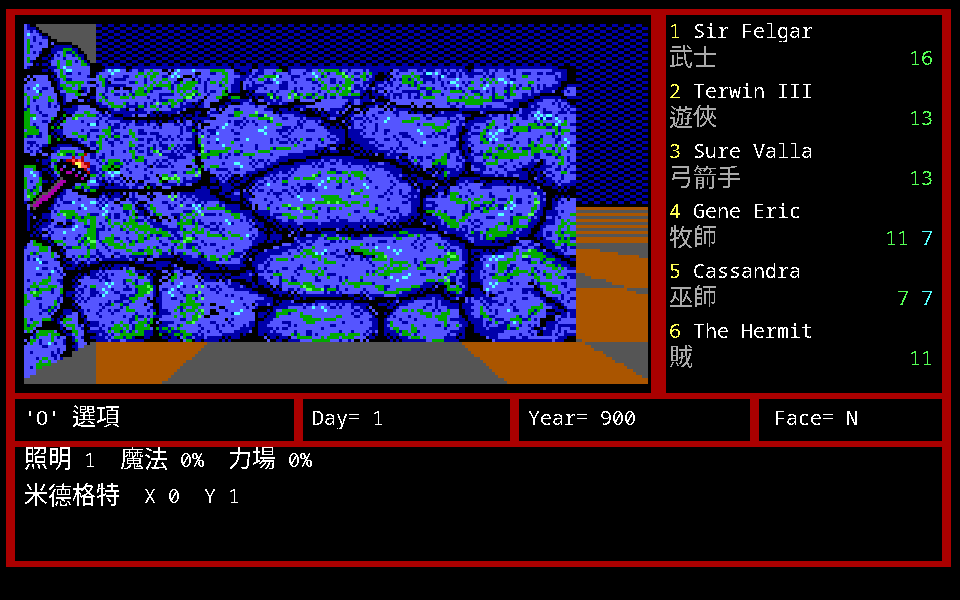
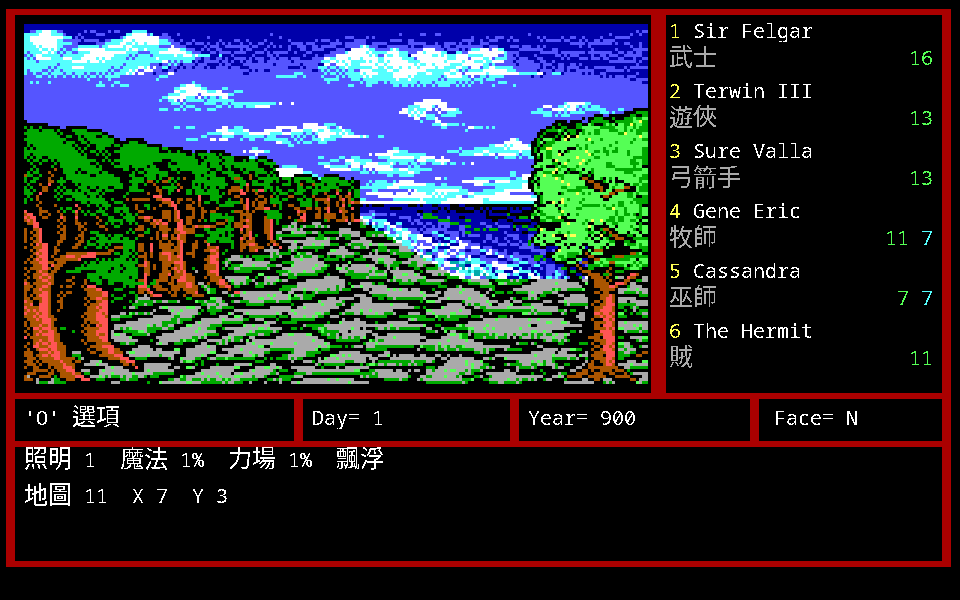
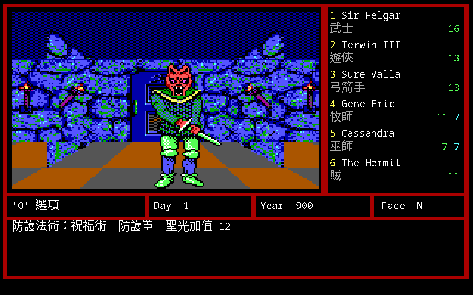
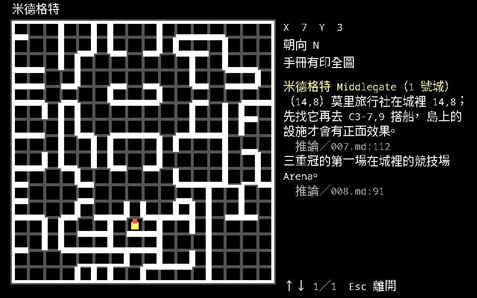
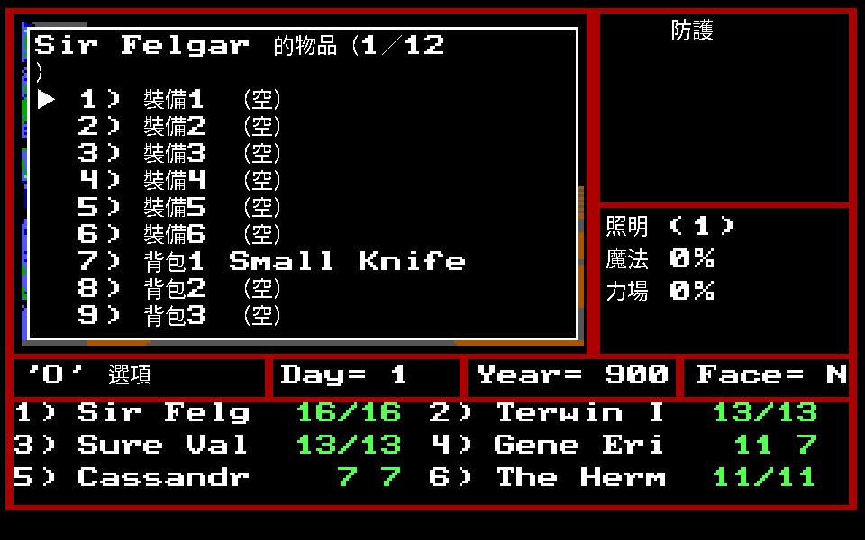
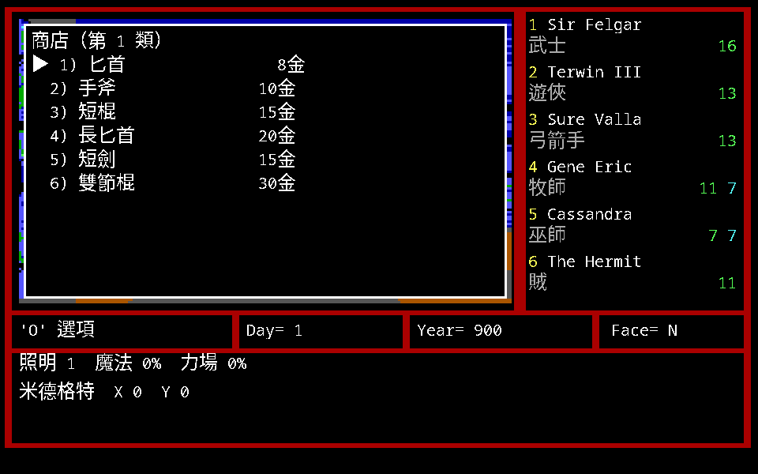

操作、畫面與野外

畫面上看到的是整個隊伍向前看到的景象，所以看不到自己的隊員。 視野是寬 3 格、深 4 格，除非有東西擋住視線。
移動
- 前進或後退：整隊往前／往後移動一格。左右轉：在原格轉 90 度。
- 未上鎖的門會自動打開。 鎖著的必須解鎖（Unlock）、撞門（Bash Door）或繞路。
- 大部份上鎖的門都設有機關，解鎖或撞門時可能啟動。
- 撞上牆或山脈會出現訊息：
Solid（障礙物）或Impassable（無法通行）。 - 隊員姓名反白顯示，表示狀況不佳。
野外的通行條件
野外擋路的不是牆，是地形。手冊把第二技能列成一張表，其中兩項直接決定你走不走得過去：
| 地形 | 條件 |
|---|---|
| 山區 | 隊伍裡要有兩名登山家 |
| 森林 | 隊伍裡要有兩名探險家 |
| 水域 | 要有水行術（牧師 3-6） |
「兩人以上」是原版程式裡真的在算的條件，不是手冊的建議。 沼澤區另有一項：D4 的 Dawn 地下城四周被沼澤包圍，隊伍要有人會嚮導技能才不會迷路。

視窗

- 防護效用視窗（Protect）：目前涵蓋整個隊伍的保護法術。 照明（light）後面括號裡的是光源單位，每單位照亮一格。 魔法防護顯示對地、水、風、火、毒、恐懼的百分比。
- 狀態列：橫跨畫面中間，內有年、月、日、隊伍面對的方向。
- 畫面下半部：每名隊員的簡要資料。
地圖與繪圖

手冊 p.37–38 教的是用紙筆畫地圖，因為原版的自動繪圖有條件：
- 必須有一名隊員具有製圖家（Cartographer）第二技能才有自動繪圖。
- 使用定位（Location，巫術 1-6）法術時，目前地區的 16×16 地圖與隊伍的位置、 方向會顯示在畫面上。只看得到目前所在地。
- 鷹之眼／巫師之眼作用時，右上角的小視窗顯示隊伍週圍 5×5 的地圖。
手冊的繪圖建議裡有一條到現在還有用：
標示一定會出現怪物的區域（如惡龍巢穴），但不要把所有遇到怪物的地點都標出來 —— 大部分是隨機出現的。
還有一條「筆者註」：第一個城市 X:8 Y:4 向南有一個噴泉， 喝下去有暫時的鷹之眼、巫師之眼效果。
休息與搜尋
- 休息（Rest）：在目前地點紮營過夜，恢復所有隊員的生命與法力， 但死亡、中毒、麻痺、石化、根除除外。
- 每位隊員消耗一份食物，長效性法術的效用也會消失。
- 休息時常會有敵人來襲。某些極危險地帶根本不允許休息。
- 休息時時間照樣流逝，有些事情和時間有關（馬戲團只在每年第 140–170 天開張）。
- 搜尋（Search）：在目前地點找隱藏的物品或寶箱。戰鬥後不要忘了按
S找戰利品。
「一直用 Rest」是這一代兩次時空移動的方法：從 800 年睡回現代、從元素界睡回科隆。
配備

- 最多配備 6 種物品，背包另外 6 項。
- 武器、盔甲、盾牌必須配戴後才能用；只放在背包裡直接戰鬥不會發揮作用。
- 護甲只能穿一件。
- 近戰與遠程武器各只能手持一把；手持雙手武器就不能再用盾牌。
- 藥品、工具可以在背包內使用。
- 按
A–F選物品，卸下時輸入1–6。
城鎮設施
| 原文 | 中文 | 功能 |
|---|---|---|
| — | 商店 | 食物、武器、盔甲及其他裝備 |
| Temples | 神廟 | 治療生病或受傷的隊員 |
| Training grounds | 訓練基地 | 經驗夠了在此受訓升等級 |
| Inns | 旅店 | 休息，也是存檔的地方 |

其他世界規則：
- 地下洞穴及地下城通常有好幾層，愈低層危機及收獲愈大。
- 城堡提供很多任務，達成後獲得黃金及經驗點數。
- 野外分五大部份：四個自然地區（水、風、火、土）和中央世界。
- 怪物隨時可能出現在原來沒有危險的地方；魔術傳送門（Magical Portals）也會隨時出現或消失。
任務
有接受或拒絕的權利，接受就必須完成才能拿到經驗。 可以同時有幾個任務在身，但有時需要到神殿去解除現有任務，才能接別的 —— 兩座城堡各有一個 (13,2) 賣「去除任務的藥水」，就是為了這件事。
時空旅行
- 開始時已經在科隆紀元第十世紀（900 年），這是遊戲的實際時間， 只能暫時地回到過去。
- 每一個世紀都有其獨特之處，地點、人物和物品都不一定相同 —— C2-14,8 在現代什麼都沒有，在 800 年是 Xabran 城堡。
- 每一次時空旅行的時間長度由程式亂數控制。
- 休息時可以傳送回十世紀你離開的那一刻。
存檔與全滅
- 回到任一城鎮的旅店，櫃台問是否登記（Sign in）時答
Y。 - 隊伍全部死亡後會回到上一次存檔的旅店，這段時間內的任務與線索都要重做。
- 可以同時有幾組隊伍分別有不同的進度。